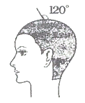
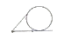
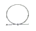
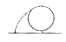
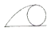

미용장 (2007-07-15 기출문제)
1과목: 임의 구분
1. 형형색색의 가발을 황상적으로 만들어 쓰기를 좋아했던 고대국가는?
- 그리스
- 이집트
- 로마
- 프랑스
(정답률: 71%)

2. 콘케이브형(concave shape) 헤어 커트란?
- 너덜너덜한 쐐기 커트 형
- 그리스의 조각품인 비너스 헤어스타일의 커트 형
- 오목한 모양으로 헤어 커트 하는 형
- 송이버섯과 비슷한 앞머리를 내린 형
(정답률: 63%)
3. 세안에 관한 사항으로 타당하지 않은 것은?
- 세안수는 38 ~ 40 ℃의 연수가 적당하다.
- 비누를 완전히 거품으로 만든 다음 피부를 부드럽게 마사지 하면서 닦는다.
- 맨 마지막 세안수는 붕사를 조금 푼 38℃ 정도의 따뜻한 물이 적당하다.
- 세안 후에는 아스트린젠트로션을 살갗에 침투시켜 피부를 수축시킨다.
(정답률: 67%)
4. 셀룰라이트(cellulite)의 가장 주된 원인은?
- 지방조직의 과잉축적
- 단백질 과잉섭취
- 비타민 부족
- 수분 부족
(정답률: 56%)
5. 퍼머넌트 시에 행하는 테스트 컬 (test curl)이란?
- 컬링 로드(curling rod)의 재질이 적합한가를 조사하는 시험
- 컬링 로드가 두발에 잘 감겨져 있는가를 조사하는 시험
- 제1액에 의해 두발에 형성된 웨이브의 탄력정도를 조사하는 시험
- 제2액에 의해 두발에 형성된 웨이브의 탄력정도를 조사하는 시험
(정답률: 65%)
6. 두발에 아주 큰 볼륨을 주기 위한 백 콤잉(back combing)으로 가장 적절한 것은?
- 스트랜드의 근원에서부터 두발 끝까지 백 콤잉
- 스트랜드의 중간부분에서 두발 끝까지 백 콤잉
- 근원만을 깊게 백 콤잉
- 스트랜드의 근원과 두발 끝 부분만을 백 콤잉
(정답률: 50%)
7. 린스(rinse)의 작용이 아닌 것은?
- 모발의 표면을 보호한다.
- 모발의 pH를 조절 한다.
- 모발의 건조를 막아 정전기가 나게 한다.
- 모발을 유연하게 하고, 광택이 나게 한다.
(정답률: 61%)
8. 네거티브 갈베닉 전류는 얼굴 관리시 피부에 어떤 역할을 하는가?
- 모공을 닫아준다
- 피부를 건조시킨다.
- 모공을 열어준다.
- 코메돈(comedones)을 제거해 준다.
(정답률: 50%)
9. 유니폼 레이어형(스퀘어 레이어)의 헤어 커트에 있어서 외곽 헤어라인의 변형에 관한 설명으로 가장 거리가 먼 것은?
- 주변에 헤어라인을 따라 두피에서 90˚로 커트하면 무게선이 없는 형을 만들게 된다.
- 먼저 90˚ 로 코트 한 후 외곽라인을 정리하면 무게가 더해지고 형태선이 분명해진다.
- 원하는 만큼의 무게선을 만들려면 자연스럽게 빗질한 상태에서 외곽라인을 설정된 무게만큼 커트한 후 무게 부위의 가장자리를 가이드로 사용하여 커트한다.
- 두상곡면을 따라 90˚ 로 커트 하면서 두정부에서 자연스러운 형태를 보인다.
(정답률: 29%)
10. 모발의 성장에 필요한 영양을 공급하는 기관은?
- 모간
- 모근
- 모유두
- 모낭
(정답률: 58%)
11. 두부에서 두부 위치에 따른 온도차로인해 염색이 어려운 부분은?
- 프렌지 부분
- 골든 포인트 부분
- 관자놀이 부분
- 네이프 부분
(정답률: 37%)
12. 퍼머넌트 웨이브의 설명 중 옳지 않은 것은?
- 제1제에 포함된 알칼리 성분은 모발을 팽윤, 연화 시킨다.
- 모발을 로드에 와인딩 하면 로드의 바깥쪽은 로드의 왼쪽보다 더 많이 늘어나는 차이를 보인다.
- 티오클리산 또는 시스테인은 모발의 수소결합을 환원시켜 절단 한다.
- 제2제를 도포하면 산화작용에 의해 시스테인을 재결합하여 고정해준다.
(정답률: 42%)
13. 그림에 있는 각도로 롤을 말았을 때 두발의 뿌리는 어떤 모양이 되는가?





(정답률: 46%)
14. 피부의 작용으로 가장 거리가 먼 것은?
- 보호작용
- 체온조절 작용
- 분비, 배설작용
- 단백질 합성 작용
(정답률: 37%)
15. 피부를 검게 만들며 탄력 섬유에 손상을 주어 피부노화의 요인이 되는 자외선 파장으로 가장 적합한 것은?
- 100 ~ 270 nm
- 280 ~ 310 nm
- 320 ~ 420 nm
- 430 ~ 540 nm
(정답률: 43%)
16. 모발성장에 관한 설명 중 틀린 것은?
- 모발은 주기가 없이 계속 자란다.
- 모발은 하나하나가 독립적으로 자란다.
- 모발은 성장, 퇴화, 휴지, 발생의 주기에 따라서 성장한다.
- 주기가 10 ~15회 지나면 모발은 더 이상 새로이 발생할 수 없게 된다.
(정답률: 45%)
17. 광노화피부의 특징이 아닌 것은?
- 피부표면의 각질층의 증가
- 기름샘, 땀샘기능 항진
- 결체조직의 위축
- 멜라닌 색소의 침착 증가
(정답률: 40%)
18. 콜드 2욕식 시스테인 퍼머넌트 웨이브제의 장점이 아닌 것은?
- 자극적 냄새 적다.
- 두발의 팽윤도가 적어 손상도가 낮다.
- 퍼머넌트 웨이브 후 감촉이 자연스럽고 부드럽다.
- 시스테인의 화학구조 불안정하다.
(정답률: 42%)
19. 스파니엘 보브(Spaniel BOb) 스타일이 가장 어울리지 않은 턱의 모양은?
- 둥근 턱
- 짧은 턱
- 주걱 턱
- 각진 턱
(정답률: 34%)
20. 두발에 영양분을 흡수시키기 위한 헤어 팩(hair pack)을 실시할 때 샴푸 후 트리트먼트 크림을 발라 헤어 마사지 후 스티밍한다. 이 때 가장 적당한 온도와 시간은?
- 38 ~ 41℃, 20분
- 40 ~ 45℃, 15분
- 45 ~ 50℃, 10분
- 45 ~ 50℃, 5분
(정답률: 40%)
2과목: 임의 구분
21. 모발에 흡수되는 물 분자에 의해서 결합이 절단 되고 팽윤되는 것은?
- 펩티드 결합(peptide bond)
- 시스틴 결합(cystine bond)
- 시스테인 결합(cystein bond)
- 수소결합(hydrogen bond)
(정답률: 48%)
22. 헤어커트 빗(haircut comb)
- 모발의 흐름정리
- 두피 혈액 순환 촉진
- 스트랜드의 분배 및 조정
- 모발의 각도와 볼륨 형성
(정답률: 42%)
23. 드리아 샴푸(dry shampoo)에 속하는 것은?
- 플레인 샴푸(plain shampoo)
- 댄드러프 샴푸(dandruff shampoo)
- 드라이 프리벤티브 샴푸(dry preventive shampoo)
- 토닉 샴푸(tonic shampoo)
(정답률: 29%)
24. 컬의 말린 방향에 의한 분류 중 다른 것은?
- 포워드 컬
- 스컬프쳐 컬
- 카운터 클럭 와이즈 와인드 컬
- 클럭 와이즈 와인드 컬
(정답률: 44%)
25. 샴푸의 주성분인 계면활성제의 작용에 대한 설명으로 옳은 것은?
- 습윤작용은 고체오염입자에 부착되어 미세입자로 분해하는 작용이다
- 유화작용은 모발과 오염입자의 부착력을 강화시키는 작용이다.
- 기포작용은 모발과 오물과의 접촉면을 분리하는 작용도 한다.
- 가용화란 수성물질을 미셀(micelle)에 가두어 분해 하는 작용이다.
(정답률: 43%)
26. 블로우 드라이에 관한 내용으로 옳지 않은 것은?
- 모발의 수분이 70% 정도 되게 드라이한다.
- 모발의 결합 중 수소와 산소의 당기는 힘에 의해 형성된다.
- 볼륨을 최대한으로 살릴 경우 판넬의 각도를 120도 이상 들어서 사용한다.
- 드라이의 적정온도는 80 ~ 90℃ 이다.
(정답률: 39%)
27. 다음 중 얼굴 마사지의 효과가 아닌 것은?
- 피부의 감각 수용기를 자극하여 피부 혈액순환을 촉진시킨다.
- 피지선 분비를 촉진 시킨다.
- 피부의 온도를 낮추어 근육을 탄력 있게 해준다.
- 각질을 제거 한다.
(정답률: 42%)
28. 다음 중 모낭에서 세포가 모모세포에서 상부로 이동하면 일어나는 변화 현상이 아닌 것은?
- 세포 모양이 변하지 않는다.
- 세포가 수분을 잃는다.
- 핵이 사라진다.
- 세포끼리 결합한다.
(정답률: 31%)
29. 헤어스타일에서 동적인 표정(운동감)을 강하게 주어보는 사람에게 보는 사람에게 힘찬 느낌과 경쾌한 율동감을 줄 수 있는 디자인 원리는?
- 점이
- 홍역
- 대칭
- 비대칭
(정답률: 31%)
30. 펌 웨이빙 과정 중 제2제 반응 시간 동안에 제2제의 처리를 한번 하는 것보다 두 번에 걸쳐 하는 것이 좋은 이유는?
- 산화작용에 의한 시스테인 의 재결합의 효과를 높이기 위해서
- 환원작용에 의해서 시스틴의 절단효과를 높이기 위해서
- 산화작용과 환원작용을 원활이 하여 모발손상으로부터 보호하기 위해서
- 산화작용에 의한 시스테인의 재결합의 효과를 낮추기 위해서
(정답률: 40%)
31. 다음 중 환경 위생 개선으로 전파 예방효과를 가장 기대할 수 있는 질병은?
- 장티푸스
- 홍역
- 백일해
- 유행성 이하선염
(정답률: 34%)
32. 우리나라의 제2군 법정전염이 아닌 것은?
- 풍진
- 파상풍
- 말라리아
- 폴리오
(정답률: 36%)
33. 다음 중 일상생활에 있어 인체에 양적으로 가장 많이 요구되는 무기질은?
- 산화염
- 칼슘
- 식염
- 비타민류
(정답률: 34%)
34. 다음 중 작업환경 관리의 목적과 가장 거리가 먼 것은?
- 직업병 치료
- 직업병 예방
- 산업재해 예방
- 작업능률 향상
(정답률: 33%)
35. 다음 중 모체로부터 얻어지는 면역의 종류는?
- 자연능동면역
- 자연수동면역
- 인공능동면역
- 인공수동면역
(정답률: 25%)
36. 다음 중 석면을 다루는 근로자에 있어서 인체에 가장 유해한 석면체의 크기는?
- 0.01 ~ 0.1㎕
- 2 ~ 5 ㎕
- 10 ~ 20 ㎕
- 1 ~ 2 mm
(정답률: 25%)
37. 가족계획사업의 효과 판성상 가장 좋은 지표는?
- 일반 사망률
- 영아 사망률
- 일반 출생률
- 인구 증가율
(정답률: 29%)
38. 다음 전염병과 주 전염경로의 연결이 틀린 것은?
- 트라코마 - 개달물 전염
- 성병 - 직접 접촉 전염
- 일본뇌염 - 절족동물 매개
- 장티푸스 - 비말 전염
(정답률: 33%)
39. 사람의 헤모글로빈(Hb)은 일산화탄소(Co)에 대한 친화력이 산소(O2)에 비해 몇 배 정도 강한가?
- 약 10 ~ 20배
- 약 30 ~ 50배
- 약 100 ~ 150배
- 약 200 ~ 300배
(정답률: 24%)
40. 다음 중 충치나 우치의 예방을 목적으로 할 때 상수 중의 불소 적정 함유량으로 가장 적절한 것은?
- 100ppm 이상
- 검출되지 않음
- 0.8 ~ 1.0ppm이상
- 8 ~ 10ppm
(정답률: 43%)
3과목: 임의 구분
41. 소화기계 잔염병과 비교하여 세균성 식중독의 특성 설명으로 틀린 것 은?
- 세균성 식중독은 면역이 형성되지 않는다.
- 세균성 식중독은 2차 감염이 거의 없다.
- 세균성 식중독은 소화기계전염병에 비해서 잠복기가 길다.
- 세균성 식중독은 균량이나 독소량이 많아야 발병한다.
(정답률: 36%)
42. 하천수에서 BOD가 높다는 것은 다음 중 어떤 의미로 볼 수 있는가?
- 무기질의 오염이 적다.
- 유기질의 오염이 많다.
- 물의 경도가 낮다.
- 물속의 산소요구량이 적다.
(정답률: 32%)
43. 다음 중 신생아에 해당되는 것은?
- 출생 우 4주일 미만 아기
- 출생 후 3개월 미만 아기
- 출생 후 6개월 미만 아기
- 출생 후 12개월 미만 아기
(정답률: 45%)
44. 에틸렌 옥사이트 가스(Ethylen Oxide Gas)멸균에 대한 설명 중 틀린 것은?
- 30 ~ 40℃의 저온에서 멸균된다.
- 고압증기 멸균법에 비해 시간이 길게 걸린다.
- 보존기간이 고압증기 멸균법에 비해 장기 보존이 가능하다.
- 가열에 변질되기 쉬운 것들이 멸균대상 이다.
(정답률: 20%)
45. 공중위생관리법에서 규정한 이.미용 기구의 크레졸소독 방법은 크레졸수 (크레졸3%, 물97%)에 몇 분 이상 담가두는 것인가?
- 10분 이상
- 20분 이상
- 30분 이상
- 60분 이상
(정답률: 25%)
46. 국세조사(National Census)를 최초로 실시한 나라는?
- 스웨덴
- 영국
- 독일
- 미국
(정답률: 17%)
47. 다음 중 기후의 3요소는?
- 기온, 기류, 기압
- 기온, 기습, 기압
- 기온, 기류, 기습
- 기온, 기압, 복사열
(정답률: 30%)
48. 다음 중 미나마타병의 원인 물질은?
- 카드뮴
- 메탈수은
- 크롬
- 비소
(정답률: 28%)
49. 다음 중 경피 감염이 가장 잘되는 기생충은?
- 회충
- 구충
- 편충
- 요충
(정답률: 11%)
50. 바셀린이나 분말 제품 등과 같이 수증기가 침투되기 어려운 물품들의 소독에 적절한 방법은?
- 냉동요법
- 건열멸균법
- 고압증기멸균법
- 저온멸균법
(정답률: 29%)
51. 공중위생감시원의 업무가 아닌 것은?
- 시설 및 설비의 확인
- 위생교육 이행여부의 확인
- 위생지도 및 개선명령 이행여부의 확인
- 시설 및 종업원에 대한 위생관리 이행여부의 확인
(정답률: 29%)
52. 공중위생영업자가 영업장 소재지를 변경한 자는 누구에게 신고하여야 하는가?
- 시도지사
- 시장, 군수, 구청장
- 노동부장관
- 보건복지부장관
(정답률: 51%)
53. 이ㆍ미용사 면허증을 다른 사람에게 대여한 경우의 2차 위반 행정처분기준은?
- 영업정지 3월
- 면허정지 6월
- 면허정지 3월
- 영업정지 6월
(정답률: 24%)
54. 이ㆍ미용의 업무를 영업소 외의 장소에서 행할 수 있도록 하는 특별한 사유를 규정한 법령은?
- 노동부령
- 행정자치부령
- 보건복지부령
- 대통령령
(정답률: 49%)
55. 이ㆍ미용업의 시설 및 설비 기준에 규정되어 있지 않은 것은?
- 소독한 기구와 소독하지 않은 기구를 구분하여 보관하는 용기를 비치해야한다.
- 세면대 및 샤워기를 갖추어야 한다.
- 소독기. 자외선 살균기 등 이ㆍ미용기구를 소독하는 장비를 갖추어야 한다.
- 별실 그 밖에 이와 유사한 시설을 설치하려서는 안 된다.
(정답률: 25%)
56. 이ㆍ미용업소 내에서 손님에게 윤락행위 도는 음란행위를 하게 하거나 이를 알선 하는 제공한 이ㆍ미용사(업주)에 대한 1차 위반 행정처분 기분은?
- 영업정지 1월
- 영업정지 2월
- 면허정지 2월
- 영업장 폐쇄 명령
(정답률: 12%)
57. 영업 신고를 하기 전에 미리 위생교육을 받을 수 없다고 인정되는 자는 통지된 교육일로부터 몇 월 이내에 위생 교육을 받아야 하는가?
- 1월
- 3월
- 6월
- 12월
(정답률: 36%)
58. 공중위생영업의 승계에 대한 설명 중 틀린 것은?
- 민사집행법에 의한 경매에 따라 공중위생 관련 시설 및 설비의 전부를 인수한 자는 지위를 승계할 수 있다.
- 이ㆍ미용업의 경우에는 면허를 소지한 자에 한하여 지위를 승계할 수 있다.
- 공중위생영업자의 지위를 승계한 자는 1월 이내에 신고해야 한다.
- 영업양도의 경우에는 양도 .양수를 증명할 수 있는 서류 사본과 호적등본을 제출하여야 한다.
(정답률: 32%)
59. 시, 도지사 또는 시장, 군수, 구청장이 공중위생 관리상 필요하다고 인정할 때에 소속 공무원으로 하여금 할 수 있게 하는 사항이 아닌 것은?
- 공중위생영업장부나 서류 열람.
- 공중이용시설의 위생관리상태 검사
- 위생관리의무이행 검사
- 위반 시설의 철거
(정답률: 23%)
60. 영업소폐쇄명령 등의 처분을 하고자 하는 때에 청문을 실시하여야 하는 주체는?
- 대통령
- 시장, 군수, 구청장
- 보건복지부장관
- 시, 도지사
(정답률: 32%)